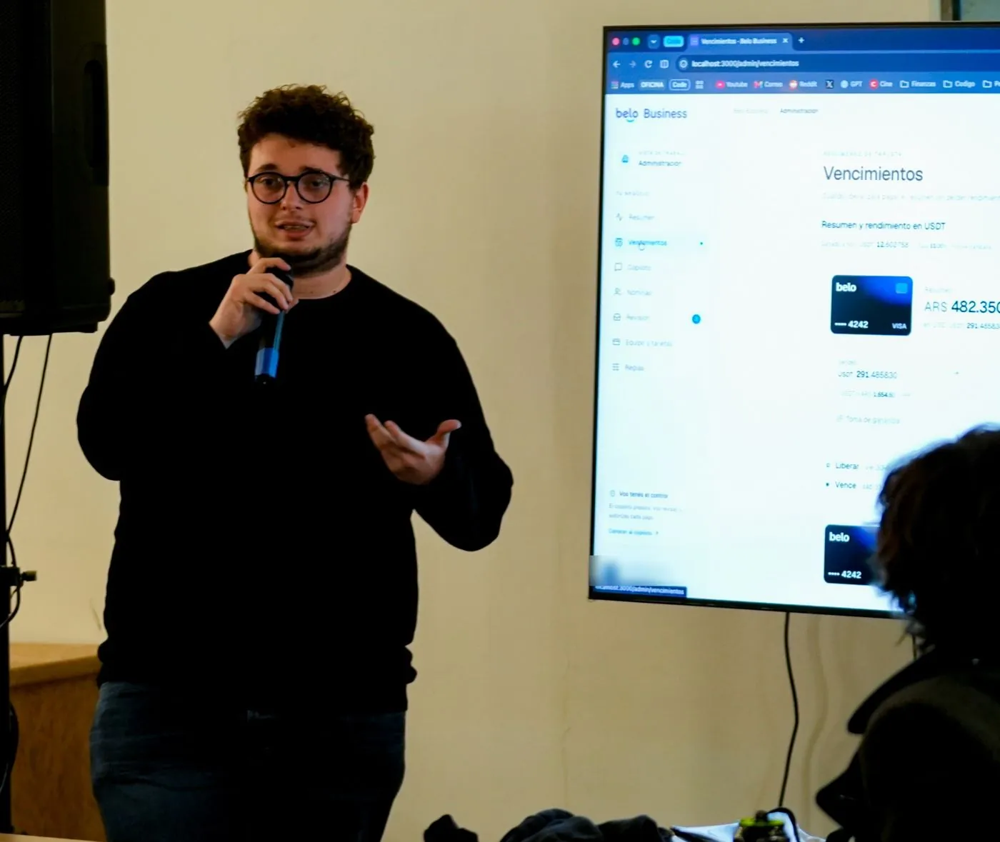
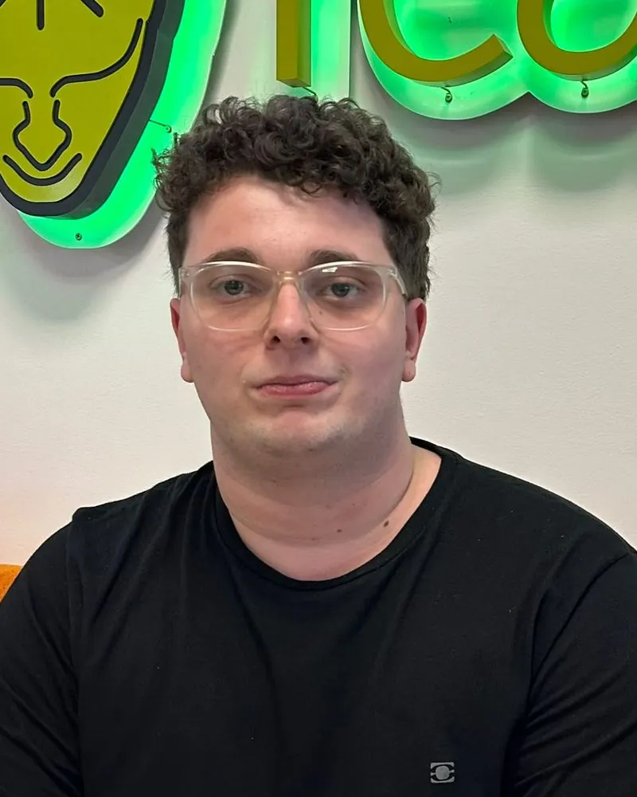
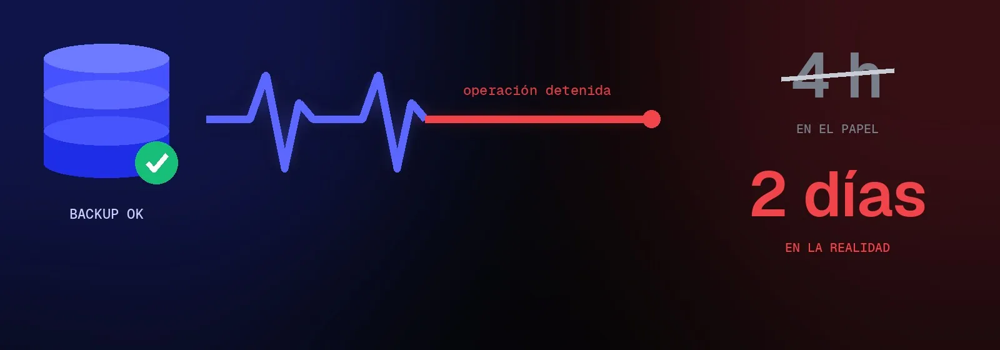

Demo en vivo Agentic Banking Buildathon de Belo · octubre 2026
Región primaria · latido normal
Proyectos
Lo que construí este año
Construidas con mi equipo en Readymind, partner de Microsoft, más un proyecto open source propio. Muestro qué resuelven y qué cambiaron; el código y los datos de clientes quedan adentro.
Producto interno · ReadymindEn producción
Portal de operaciones CSP
Une el trabajo de los account managers con Partner Center: accesos, costos, licencias y compras de toda la cartera en un solo lugar y en solo lectura.
ReactTypeScriptPostgreSQLContainer AppsEntra IDPartner Center API
Construyo la herramienta y opero la nube donde corre
Uso IA para ir más rápido. Cada cambio lo reviso yo.
Producto
Del problema a la herramienta
Relevo cómo se hace hoy la tarea y quién la sufre, diseño la solución y la dejo en manos del equipo.
ReactNext.jsPostgreSQL
Plataforma
Azure seguro por defecto
Identidad, redes, infraestructura como código y CI/CD. Solo lectura cuando alcanza, menor privilegio y cero secretos en el código.
TerraformEntra IDGitHub Actions
IA en el flujo
Agentes con revisión propia
Claude Code con skills propias e integraciones MCP para automatizar, investigar y construir. Cada cambio pasa por mi revisión.
Claude CodeMCPSkills
Experiencias
Mi primer hackatón
Un día para armar un producto en equipo y presentarlo frente al jurado.

Octubre de 2026 · Buenos AiresAgentic Banking Buildathon de Belo
Primer hackatón
Belo Business: la tarjeta corporativa que rinde hasta el vencimiento
En equipo construimos sobre la API de Belo una plataforma para que una empresa controle sus tarjetas y sus gastos. Un copiloto prepara cada pago y una persona lo revisa y lo autoriza.
La idea: lo que gastás con la tarjeta queda invertido en USDT hasta el día antes del vencimiento. Un agente compra y vende los dólares por detrás para pagar el resumen con el rendimiento ganado.
Mi parte: esa idea y el motor de reglas que decide qué gasto pasa, cuál se frena y cuál va a revisión.
La demo: la presenté en vivo ante el jurado y los demás equipos.
Un caso real y la consulta o el script que lo resolvió. Un mail por semana.

Sobre mí
Empecé en infraestructura y terminé construyendo producto
Trabajo en una consultora partner de Microsoft con cuentas corporativas de varios países. Empecé en infraestructura y hoy paso buena parte del tiempo construyendo las herramientas que el equipo usa con los clientes.
Publico cada semana en LinkedIn para líderes de IT de Latinoamérica: bajo lo complejo a decisiones concretas.
Por qué tener backup no es tener continuidad, y qué cambia cuando la prueba de recuperación deja de ser un evento y pasa a ser una rutina.

En la mayoría de los comités de tecnología, la pregunta "¿tenemos backup?" se responde con un sí y la conversación termina ahí. El problema es que esa pregunta mide la protección del dato, no la capacidad real de volver a operar. Son dos métricas distintas, y confundirlas es una de las brechas más caras en la gestión de infraestructura.
RPO y RTO no miden lo mismo
RPO (Recovery Point Objective): cuánta información está dispuesta a perder la compañía. Lo responde la política de respaldo: si el backup corre cada 24 horas, el RPO es de 24 horas.
RTO (Recovery Time Objective): cuánto tarda el negocio en volver a operar. No lo responde el backup, sino el procedimiento completo: detectar, decidir, restaurar, validar y reconectar dependencias.
Donde se rompen los planes
La distancia entre esas dos métricas es donde se rompen los planes de continuidad. Restaurar volúmenes de varios TB desde almacenamiento frío no es una operación de minutos. Sumando el tiempo de decisión, la validación funcional y el reordenamiento de dependencias, un RTO que en el papel figuraba en 4 horas puede convertirse en dos jornadas de operación detenida.
Lo vi en un caso real: servidores Linux críticos cuya versión de kernel quedaba fuera de la matriz de soporte de Azure Site Recovery. La salida estándar, restaurar desde los backups de Veeam, funcionaba, pero rehidratar discos completos desde un backup en frío estiraba el RTO a cifras inaceptables. Lo conté en este post.
Un plan que nunca se ejecutó es una hipótesis
Las pruebas de failover son el único momento en que aparecen las dependencias no documentadas, los servicios que levantan en el orden equivocado y las credenciales vencidas. Descubrir eso durante una contingencia real cuesta muchísimo más que descubrirlo en una prueba planificada.
Por eso automatizamos el test failover con Site Recovery: hoy probamos decenas de servidores en paralelo, por grupos y en una red aislada que no toca producción, y la validación pasó de unas 2 horas a 45 minutos, con evidencia para auditoría. Probar dejó de ser un evento caro y pasó a ser una rutina.
Qué medir en la próxima prueba
El tiempo total, de punta a punta, contra el RTO que figura en el papel.
El orden real de arranque y las dependencias que no estaban documentadas.
Quién tomó cada decisión y cuánto se tardó en tomarla.
Qué se validó funcionalmente, además de "la VM encendió".
¿Con qué frecuencia ejecutan pruebas reales de recuperación en sus organizaciones? Lo charlamos en el post original.
Diseñar soluciones que equilibren escalabilidad, seguridad y costo es un desafío constante. Hoy lo aplicamos a los datos inactivos en Azure.
Tener cantidades masivas de información inactiva u obsoleta en la nube se convierte rápido en un agujero negro para el presupuesto: años de registros de auditoría o backups viejos ocupando el almacenamiento más caro sin aportar valor diario.
Tiering automático con políticas de ciclo de vida
Azure Blob Storage permite definir políticas de ciclo de vida que mueven los datos "fríos" al nivel Archive. Corren de forma nativa y en segundo plano, sin impacto operativo: el motor evalúa los metadatos de cada blob y lo pasa al nivel más eficiente en costo.
El impacto es grande: se pasa de tarifas estándar a fracciones de centavo, con proyecciones de ahorro de hasta un 90% para esos conjuntos de datos.
Lo que exige Archive
Rehidratación: Archive está offline. Para leer un blob hay que rehidratarlo, con latencias de horas.
Early deletion: si un blob se modifica, se lee o se borra antes de los 180 días de retención mínima, Azure cobra una penalización.
Un ejemplo
Esta regla busca los blobs de la carpeta backups y, si no se modificaron en 90 días, los pasa a Archive:
Para quienes ya usan Archive: ¿cuál fue su mayor desafío al equilibrar el ahorro frente a los tiempos de rehidratación? Publicado originalmente en LinkedIn.
01. Recursos huérfanos: discos, IP públicas y NICs
Lo que quedó suelto después de borrar VMs y se sigue pagando.
KQL
resources
| where type == "microsoft.compute/disks" and tostring(properties.diskState) == "Unattached"
| project tipo = "Disco sin adjuntar", name, resourceGroup, subscriptionId
| union (resources
| where type == "microsoft.network/publicipaddresses" and isnull(properties.ipConfiguration)
| project tipo = "IP pública sin asociar", name, resourceGroup, subscriptionId)
| union (resources
| where type == "microsoft.network/networkinterfaces"
and isnull(properties.virtualMachine) and isnull(properties.privateEndpoint)
| project tipo = "NIC sin VM", name, resourceGroup, subscriptionId)
02. Estado de encendido de las VMs
Cuántas están encendidas, apagadas o desasignadas. Una VM apagada sin desasignar se sigue cobrando.
KQL
resources
| where type == "microsoft.compute/virtualmachines"
| extend estado = tostring(properties.extended.instanceView.powerState.code)
| summarize vms = count() by estado
| order by vms desc
03. VMs sin Azure Backup
Máquinas que no aparecen como protegidas en ningún Recovery Services Vault.
KQL
resources
| where type == "microsoft.compute/virtualmachines"
| extend vmId = tolower(id)
| join kind = leftouter (
recoveryservicesresources
| where type == "microsoft.recoveryservices/vaults/backupfabrics/protectioncontainers/protecteditems"
| extend vmId = tolower(tostring(properties.sourceResourceId))
| project vmId, vault = tostring(split(id, "/")[8])
) on vmId
| where isempty(vault)
| project name, resourceGroup, location, subscriptionId
04. Reglas de NSG abiertas a Internet en RDP o SSH
La puerta más común para un incidente.
KQL
resources
| where type == "microsoft.network/networksecuritygroups"
| mv-expand regla = properties.securityRules
| where regla.properties.direction == "Inbound" and regla.properties.access == "Allow"
| where tostring(regla.properties.sourceAddressPrefix) in ("*", "Internet", "0.0.0.0/0")
| extend puerto = tostring(regla.properties.destinationPortRange)
| where puerto in ("22", "3389", "*")
| project nsg = name, regla = tostring(regla.name), puerto, resourceGroup, subscriptionId
05. Cuentas de almacenamiento con acceso público o TLS viejo
Blobs que se pueden leer sin autenticación y cuentas que aceptan TLS 1.0 o 1.1.
KQL
resources
| where type == "microsoft.storage/storageaccounts"
| extend accesoPublico = tobool(properties.allowBlobPublicAccess),
tls = tostring(properties.minimumTlsVersion)
| where accesoPublico == true or tls != "TLS1_2"
| project name, accesoPublico, tls, resourceGroup, subscriptionId
06. SQL Servers con acceso de red público
Candidatos a private endpoint.
KQL
resources
| where type == "microsoft.sql/servers"
| where tostring(properties.publicNetworkAccess) == "Enabled"
| project name, resourceGroup, location, subscriptionId
07. Recursos sin tag de responsable
Sin owner, nadie decide si se apaga, se paga o se borra.
KQL
resources
| where isempty(tostring(tags["owner"]))
| summarize recursos = count() by type
| order by recursos desc
08. Recomendaciones de costo de Azure Advisor
Lo que Microsoft ya detectó y nadie aplicó.
KQL
advisorresources
| where type == "microsoft.advisor/recommendations"
| where tostring(properties.category) == "Cost"
| project impacto = tostring(properties.impact),
problema = tostring(properties.shortDescription.problem),
recurso = tostring(properties.resourceMetadata.resourceId)
| order by impacto asc
09. Secure Score de Defender por suscripción
Un número para seguir mes a mes.
KQL
securityresources
| where type == "microsoft.security/securescores"
| extend puntaje = round(todouble(properties.score.percentage) * 100, 1)
| project subscriptionId, puntaje
| order by puntaje asc
10. Recursos por región
Para detectar despliegues fuera de las regiones permitidas antes de escribir la policy.
KQL
resources
| summarize recursos = count() by location
| order by recursos desc
This page is in Spanish. An English version is on the way.
Speaker kitPara organizadores de eventos y comunidades
Santiago Da Ros como speaker
Todo lo que necesitás para presentarme en tu evento: bio, fotos, temas y formatos. Charlas en español; en inglés, a coordinar.
Bio corta
Santiago Da Ros es Cloud & Product Engineer en una consultora partner de Microsoft en Buenos Aires. Construye productos internos y automatizaciones sobre Azure para clientes corporativos de Latinoamérica, y escribe cada semana para líderes de IT de la región.
Bio larga
Santiago Da Ros es Cloud & Product Engineer en una consultora partner de Microsoft en Buenos Aires. Construye productos internos y automatizaciones sobre Azure para clientes corporativos de Latinoamérica, y escribe cada semana para líderes de IT de la región. Trabaja en identidad, gobernanza, FinOps y recuperación ante desastres,, y diseñó una prueba automatizada de recuperación ante desastres que hoy usa su equipo. Tiene seis certificaciones de Microsoft, entre ellas AZ-305 y AZ-400, y habló en Fabric Day con la comunidad Microsoft Speakers Hub en Español. Sus charlas muestran el trabajo funcionando, con demos en vivo.
This page is in Spanish. An English version is on the way.
Página de estadoActualizada en noviembre de 2026
Estado de Santiago Da Ros
Todos los sistemas principales operativos
Azure e identidadOperativo
6 certificaciones activas
ProductoOperativo
5 herramientas en uso
BlogOperativo
Un artículo por semana
CharlasOperativo
Próxima sesión en 2027
SC-100Mantenimiento programado
Examen antes de fin de año
Incidentes resueltos
Primer hackatón, con un día de plazo
Causa: no había producto. Solución: Belo Business, construida en equipo sobre la API de Belo y presentada en vivo. Yo propuse el rendimiento en USDT hasta el vencimiento y armé el motor de reglas.
Licencias pagas sin asignar en toda la cartera
Causa: la información estaba repartida en más de 200 tenants. Solución: el Portal de operaciones CSP, en solo lectura y en producción.
Mantenimientos programados
Examen SC-100
Impacto esperado: ninguno. Después de la ventana, el componente de seguridad sube de nivel.
Un solo lugar para ver accesos, costos, licencias y compras de toda la cartera de clientes.
+200clientes en más de 5 países
9integraciones de solo lectura
El problema
La información que un account manager necesita para atender a un cliente estaba repartida entre portales distintos. Responder algo simple, como cuántas licencias se pagan sin usar, llevaba tiempo y dependía de quién supiera dónde buscar.
La idea
Juntar todo en un portal propio que lee las fuentes de Microsoft sin poder modificarlas, muestra a cada persona solo lo que le corresponde y pide una doble aprobación antes de cualquier compra.
Qué cambió
El equipo consulta la cartera completa en un lugar, detecta licencias sin asignar y renovaciones a tiempo, y las compras quedan registradas y aprobadas.
Mi rol
Relevé con los account managers qué necesitaban, definí el alcance y los permisos por rol, diseñé las pantallas, programé las integraciones de solo lectura con Microsoft, armé el circuito de compras con doble aprobación y lo puse en producción en Azure.
Producto internoFinOpsSeguridad por defecto
Muestro el qué y el porqué. El código y los datos de clientes quedan dentro de Readymind.
Probar un plan de recuperación dejó de ser un evento caro y pasó a ser una rutina.
2 h → 45 minpor prueba
20servidores en paralelo
El problema
Validar que un plan de recuperación funcione de verdad llevaba unas dos horas de trabajo manual. Como probar era caro, se probaba poco, y un plan que no se prueba es solo una hipótesis.
La idea
Automatizar la prueba completa: levantar los servidores por grupos en un entorno aislado que no toca producción, con controles de seguridad, y dejar un reporte como evidencia para auditoría.
Qué cambió
La validación pasó a tardar 45 minutos, un 62% menos, y se puede repetir cuando haga falta. Las sorpresas aparecen en la prueba y no durante una caída real.
Mi rol
Definí el orden de recuperación por grupos de servidores, escribí la automatización sobre Site Recovery, sumé los controles que impiden tocar producción y armé el reporte que queda como evidencia.
ContinuidadAutomatizaciónEvidencia para auditoría
Muestro el qué y el porqué. El código y los datos de clientes quedan dentro de Readymind.
Un relevamiento de seguridad repetible, que no depende de quién lo haga.
209controles por corrida
0cambios en el entorno
El problema
Relevar la seguridad de un entorno de Azure, identidad y Microsoft 365 a mano lleva días, y el resultado cambia según la persona que lo hace.
La idea
Una auditoría que corre sola, solo con permisos de lectura, revisa identidad, accesos y configuración, y entrega un plan priorizado que se puede presentar a la dirección.
Qué cambió
Los relevamientos son más rápidos y comparables entre clientes, y la conversación con el cliente arranca desde un diagnóstico claro y no desde una lista de 50 problemas.
Mi rol
Elegí y escribí los 209 controles de identidad, acceso y configuración, los programé para correr solo con permisos de lectura, diseñé el informe con el plan priorizado y lo presento a los clientes.
SeguridadIdentidadRelevamientos
Muestro el qué y el porqué. El código y los datos de clientes quedan dentro de Readymind.
Las reglas de Azure de varios clientes, gestionadas desde un solo lugar y con aprobación.
Multi-tenantdesde un repositorio
0secretos guardados
El problema
Aplicar reglas de seguridad y costo en cada cliente a mano es lento, difícil de auditar y fácil de romper.
La idea
Escribir las reglas una vez, versionarlas y aplicarlas en varios clientes con una aprobación previa, sin guardar contraseñas en ningún lado.
Qué cambió
Es la base de un servicio de gobernanza reutilizable dentro de Readymind. Está en desarrollo avanzado.
Mi rol
Diseñé la arquitectura para operar varios clientes desde un repositorio, armé el flujo que pide aprobación antes de aplicar cada cambio y la autenticación sin contraseñas guardadas.
GobernanzaMulti-clienteEn desarrollo
Muestro el qué y el porqué. El código y los datos de clientes quedan dentro de Readymind.
Cada servidor protegido según lo que vale para el negocio, no todos igual.
3niveles de protección
0migraciones forzadas
El problema
Todos los servidores se respaldaban con la misma política, pagando copias rápidas incluso donde no hacían falta.
La idea
Clasificar los servidores en tres niveles según qué tan críticos son y darle a cada nivel la protección y el costo que corresponden, sin tocar lo que ya funciona.
Qué cambió
Menos gasto en copias rápidas, una limpieza de respaldos huérfanos y una política que se explica en una frase. Está en curso.
Mi rol
Audité los respaldos y políticas existentes, clasifiqué los servidores por criticidad, diseñé las tres políticas y la limpieza de copias huérfanas, y armé el plan para aplicarlo sin migrar lo que ya funciona.
FinOpsContinuidadEn curso
Muestro el qué y el porqué. El código y los datos de clientes quedan dentro de Readymind.
Un arnés para operar infraestructura crítica con agentes de IA, con el mismo rigor que pide producción.
4invariantes de diseño
Open sourceen GitHub
El problema
Un modelo de lenguaje es probabilístico y producción exige determinismo. Pegar miles de líneas en un chat esperando que el modelo "recuerde no romper nada" no es ingeniería.
La idea
Poner la inteligencia en el andamiaje de control: separar el control de la ejecución, validar con esquemas en vez de pedirle cosas al modelo, mandarle solo el contexto necesario y verificar cada resultado por fuera.
Qué cambió
Trabajo con agentes que orquestan tareas en entornos aislados, nunca ven credenciales y no cierran nada sin evidencia independiente. Se instala solo en todos mis equipos.
Mi rol
Lo diseñé, lo construí y lo publiqué como open source: los plugins, los flujos de trabajo con agentes, los scripts de entornos aislados y las reglas de verificación.
 Azure
Azure Entra ID y Conditional Access
Entra ID y Conditional Access Azure Arc y Lighthouse
Azure Arc y Lighthouse Site Recovery y Backup
Site Recovery y Backup Terraform
Terraform GitHub Actions
GitHub Actions Azure DevOps
Azure DevOps Docker y Container Apps
Docker y Container Apps TypeScript, React y Next.js
TypeScript, React y Next.js PostgreSQL y PostgREST
PostgreSQL y PostgREST Supabase y Vercel
Supabase y Vercel Python y SQL
Python y SQL PowerShell y Azure Automation
PowerShell y Azure Automation Claude Code
Claude Code Servidores MCP
Servidores MCP KQL y Resource Graph
KQL y Resource Graph